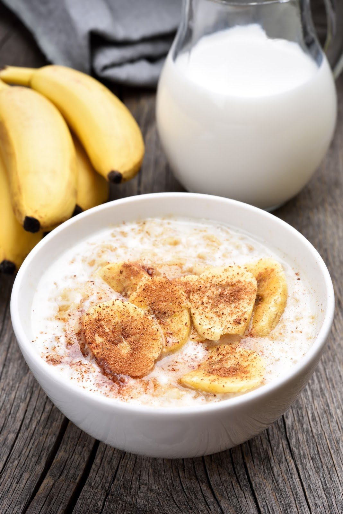
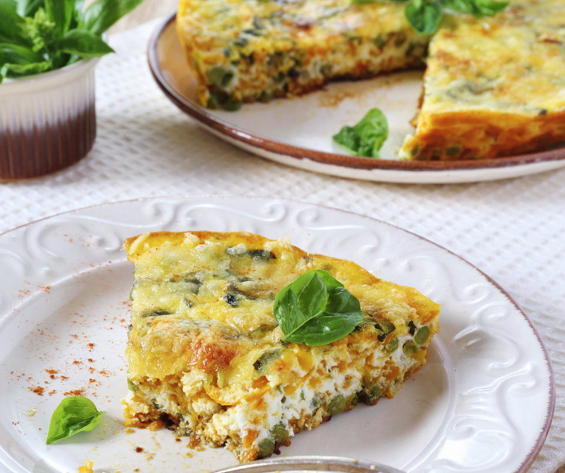
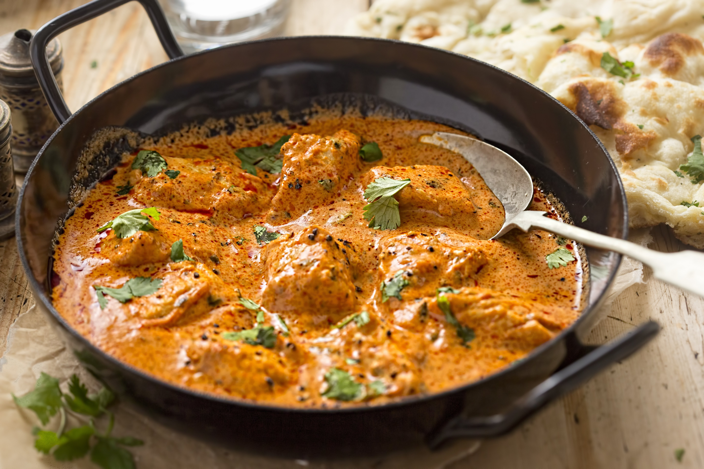
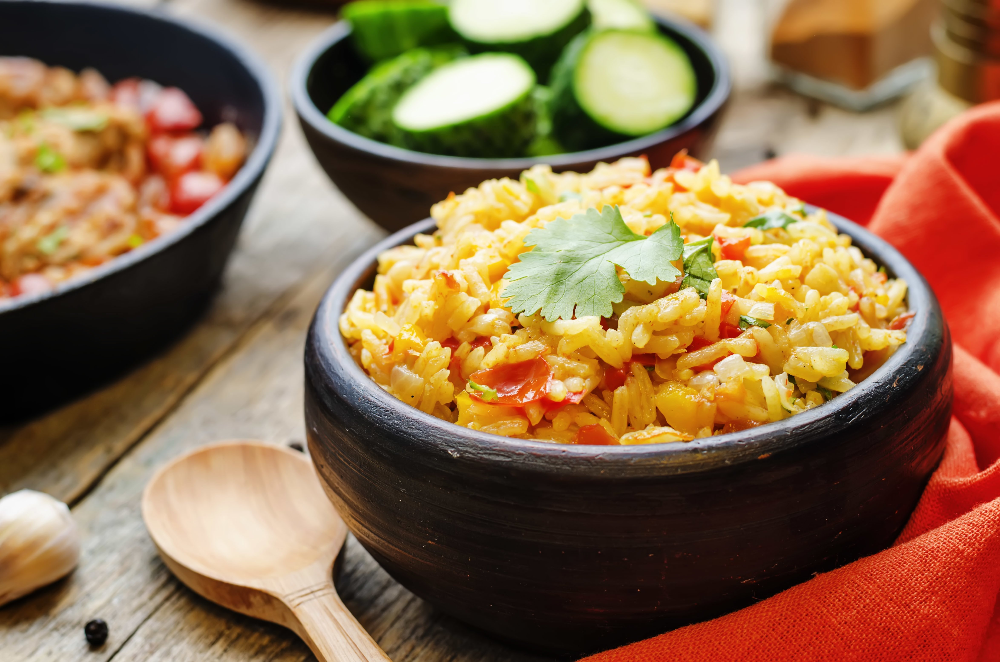
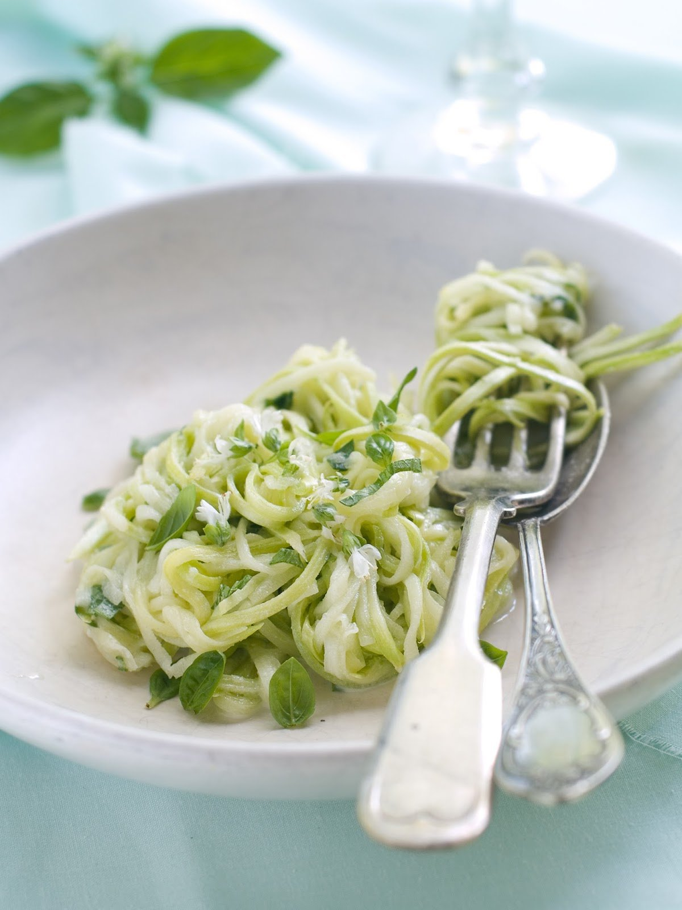
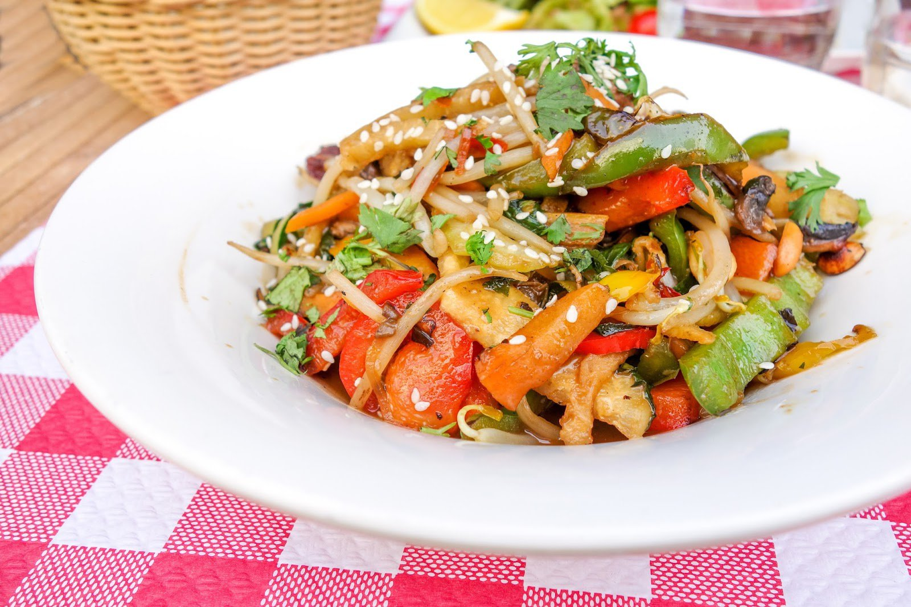

Morgenmad
-

Coco Peanut Smoothie
Perfekt til det varmere vejr! Kan nydes som en nem og mættende morgenmad, en eftermiddagsnack, når kl. 15.00 falder. Du kan endda reducere mængden af mælk og gøre den til en tykkere dessert i 'nice cream'-stil!
-

Quinoa Grød med Banan & Yoghurt
Leder du efter en glutenfri lav FODMAP morgenmad? Her er en nærende mulighed for at hjælpe med at øge din morgenenergi.
-

Sød Kartoffel og Feta Frittata
Denne lækre frittata ville være fantastisk til morgenmad, brunch eller når som helst! Den er fuld af karamelliserede søde kartofler, rød peberfrugt, sorte bønner, feta og valgfri, men anbefalet koriander.
Frokost
-

Atlantisk Laks & Kartoffel
Laks er fyldt med sunde fedtstoffer, herunder omega-3! Fedtet er afgørende for hjernens, øjets og hjertets sundhed. Parret med sprøde, ristede kartoffelchips er dette måltid den perfekte middag til en varm sommeraften!
-

Kylling Madras Karry
Denne kyllingemadras er fyldt med urter og krydderier og er perfekt til en hyggelig aften derhjemme! Server med dampet ris for at få alle de lækre smag med.
-

Urte & Grøntsagsris Pilaf
Normalt ikke lav FODMAP, da den indeholder løg og hvidløg, denne opskrift er en god base til frokost eller middag, bare tilføj dit valg af protein som grillet laks eller tofu.
Aftensmad
-

Tun & Søde Kartoffelkager
Dette er et hurtige og nemt low FODMAP-måltid. Børnene vil elske at røre i skålen og rulle disse lækre bøffer til kugler, bare husk at overvåge dine børn omkring knive og varme pander!
-

Zucchinipasta med Kål og Parmesansalat
Vi ønskede at vise dig, hvordan du "FODMAP stacker" i en opskrift og fristede dig ved at nævne en courgettepasta med kål- og parmesansalat. Her er det.
-

Grøntsags Stir Fry
Asiatisk inspirerede stir-fries er en af verdens hurtigste og sundeste måltider, du nemt kan tilberede. De er også meget billige, hvis der anvendes sæsonbetonede grøntsager. Bortset fra at være lækre giver de et spændende udvalg af farver og teksturer alle i samme skål.